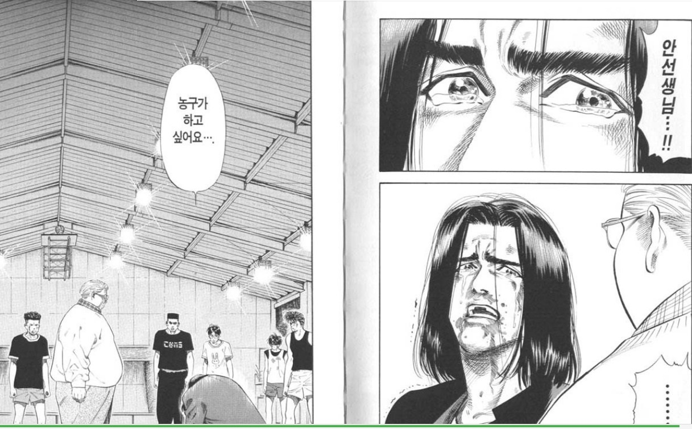

그당시 축구밖에 모르던 내가 농구를 접하면서, 새로운 경험과 동아리 활동으로 인해 농구에 완전 빠지게 되었다.
농구최고! 최근에 농구 만화인 슬램덩크를 보았었는데 이걸 중학교나 고등학교 때에 봤었더라면 농구에 미치지 않았을까?
그떄 보질 않았던게 너무 아쉬울 따름이다. 이제는 아무때나 공을 들고 나가서 농구를 할 수 는 없으니까..
사실 농구를 좋아하는 것 치고는 농구도 안한지 꽤 되었고,농구 경기를 막 본다거나 그러지도 않았으니 생각보다 겉만 좋아한 것일까 생각할 수 도 있을 듯 하다.
하지만 농구를 하는걸 좋아하는데 이것만으로 이유가 될 수 있지 않을까?
오랜만에 농구나 하고싶다.
